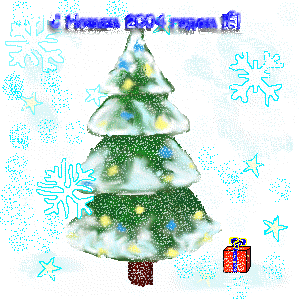

Новости
А биплатных новостей на сегодня больше нет
Документ обновлен:
Горячая
ньюса(14.01.2004): Вот наконецтво оно свершилось. Мне удалось найти
способ как удалять надпись Demo в *.gif картинках сдаланых в PhotoLine.
Наконец таки удалось победить этот грёбаный формат. Теперь всё будет
выглядеть значительно лучше и моя страница (она же хомяк) станет
выглядеть ещё лучше. И всё благодаря тому же Linux. Ах да, чуть не
забыл. Сегодня 14 января, старый новый год - праздник с самым
интересным названием. Ну раз уж я тут оказался в такой день, то всех
поздравляю с этим замечательным событием. Пока всё. Ваш Юр Юрыч.
Горячая
ньюса(6.01.2004): Сегодня я принимаю поздравления. Сегодня я написал
свою первую программу под Linux. Это была самая обычная программа Hello
Word на C, затем на C++, а потом и под Gnome. Жаль, но для KDE пока
ничего не вышло. Эй!, читатель блин, хватит ржать. В конце концов
каждый начинает с Hello Word. Я не исключение. Linux это вам не в тапки
срать :0)
|

|
(1.01.2004) Вот он и настал Новый Год.
С чем всех и пождравляю. Желаю всего самого наилучшего.
Вот... А теперь самое время подвести итоги этого-вот
самого, ушедшего, года. Не знаю у кого как, а у меня он прошёл очень
скучно. И вообще я очень рад, что он наконец-таки закончился.
Практически все, что произошло имело в той или иной степени
орицательный характер. Мало что смогло разбавить весь этот отстой.
Однако кое-что всё таки было. У каждого это кое-что своё,так что я не
стану тут распинаться, что именно это такое. Главное чтобы его было
чуть-чуть побольше. Ну так вот В новом году я желаю всем, чтобы этого
немногого было очень много. (О как сказал!). Ещё прошедший год для меня
охарактеризовался массовыми провалами практически всех проектов. Да,
даже вот этот самый некчёмный сайт взять, например. Что сдвинулось за
этот год? Да практически ничего (ну, разве что The Wall появилась). А
сколько было задумано? Я сейчас даже всего и не вспомню. Так вот, еще
одно пожелание на наступивший уже Новый 2004 год -> Пусть сбудется
всё, что задумано. Да пребудет с нами сила. Пора таки достичь цель
поставленную в прошлом и перейти к новой. Всем удачи в этой не лёгкой
жизни!
|
(14.07.2003): Возобновлена работа над моей страничкой. Не много не мало, а 5 месяцев
она вообще висела без пресмотра, да и я собственно в нете не появлялся.
На все есть веские причины, так что... Надеюсь так оно дальше не будет.
Итак, что нового? А нового будет много. Во-первых, появится несколько
новых разделов. Первый из них уже зародился. Прошу любить и жаловать.
The Wall - название нового проекта. Эта часть странички представлена в
виде уличной стены на которой, как и на многих уличных стенах написана
всякая всячина, разрисована граффити, ну ! и кое-что еще :0). Буду
признателен если Вы пожелаете принять участие в создании этой самой
стены. Идеи и работы прозьба посылать на
мой мэйл
с пометкой The Wall. Ок. Ну делее, в разделе проекты появится маленькая
страничка посвященная обучению извлечения квадратного корня методом
"вручную". Метод хороший, я скажу. Ну, а вообще, это одна из моих работ
по психологии, которую я почему-то решил выложить. Почему? Можно я не
буду объяснять причин. Ок. А все остальное пока в секрете. И вот еще -
У МЕНЯ 19 ИЮЛЯ ДЕНЬ РОЖДЕНИЯ, прошу ( нет требую :0) кучу подарков и
поздравлений.
Ваш Юр Юрыч.
(14.02.2003): День Святого Валентина! Всех поздравляю с этим чудесным праздником.
Всех люблю! Особенно Иринку, Танюшку, Надюшку, Наташкину и Дашкину!
Чмоки.
(27.01.2003): Сегодня наконецтво закончилась сессия. Уррья! Наконецтво я свободен и смогу
хорошенько отдохнуть. Всем желаю того же.
(2.01.2003): страничка продолжает расти и становится мало по малу приобретать
человеческий вид. Сегодня планируется начало развертки. Все замечания и
пожелания прозьба оставлять в форуме или гостевухе.
(1.01.2003): вах, вот он и наступил - Новый год, ураа(!) всех с праздником, всех
люблю, всем желаю самого наилучшего.
сегодня (тобишь (15.12.2002)) добавился форум и гостевая бука. Вот
пока все.